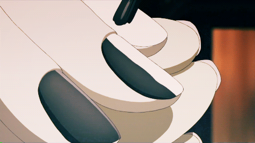

GIF Nail Art
This page shows an example of a GIF image using nail art.

I chose this image because I thought it looked really cute and pretty. I also really like anime, and something about this image just caught my attention
GIF is an image file type that can show a short animation.
Source:GIPHY